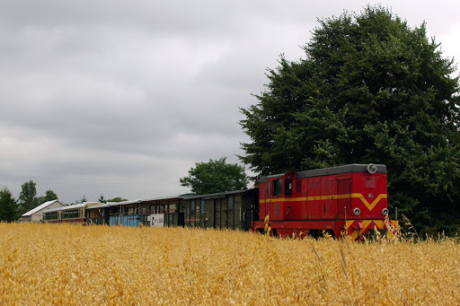

"Lokomotywa"
Zwrotka 1
Stoi na stacji lokomotywa,
Ciężka, ogromna i pot z niej spływa:
Tłusta oliwa.
Zwrotka 2
Stoi i sapie, dyszy i dmucha,
Żar z rozgrzanego jej brzucha bucha:
Uch - jak gorąco!
Puff - jak gorąco!
Uff - jak gorąco!
Już ledwo sapie, już ledwo zipie,
A jeszcze palacz węgiel w nią sypie.
Wagony do niej podoczepiali
Wielkie i ciężkie, z żelaza, stali,
I pełno ludzi w każdym wagonie,
A w jednym krowy, a w drugim konie,
A w trzecim siedzą same grubasy,
Siedzą i jedzą tłuste kiełbasy,
A czwarty wagon pełen bananów,
A w piątym stoi sześć fortepianów,
W szóstym armata - o! jaka wielka!
Pod każdym kołem żelazna belka!
W siódmym dębowe stoły i szafy,
W ósmym słoń, niedźwiedź i dwie żyrafy,
W dziewiątym - same tuczone świnie,
W dziesiątym - kufry, paki i skrzynie,
A tych wagonów jest ze czterdzieści,
Sam nie wiem, co się w nich jeszcze mieści.
Lecz choćby przyszło tysiąc atletów
I każdy zjadłby tysiąc kotletów,
I każdy nie wiem jak się wytężał,
To nie udźwigną, taki to ciężar.
Nagle - gwizd!
Nagle - świst!
Para - buch!
Koła - w ruch!
Zwrotka 3
Najpierw -- powoli -- jak żółw -- ociężale,
Ruszyła -- maszyna -- po szynach -- ospale,
Szarpnęła wagony i ciągnie z mozołem,
I kręci się, kręci się koło za kołem,
I biegu przyspiesza, i gna coraz prędzej,
I dudni, i stuka, łomoce i pędzi,
A dokąd? A dokąd? A dokąd? Na wprost!
Po torze, po torze, po torze, przez most,
Przez góry, przez tunel, przez pola, przez las,
I spieszy się, spieszy, by zdążyć na czas,
Do taktu turkoce i puka, i stuka to:
Tak to to, tak to to , tak to to, tak to to.
Gładko tak, lekko tak toczy się w dal,
Jak gdyby to była piłeczka, nie stal,
Nie ciężka maszyna, zziajana, zdyszana,
Lecz fraszka, igraszka, zabawka blaszana.
Zwrotka 4
A skądże to, jakże to, czemu tak gna?
A co to to, co to to, kto to tak pcha,
Że pędzi, że wali, że bucha buch, buch?
To para gorąca wprawiła to w ruch,
To para, co z kotła rurami do tłoków,
A tłoki kołami ruszają z dwóch boków
I gnają, i pchają, i pociąg się toczy,
Bo para te tłoki wciąż tłoczy i tłoczy,
I koła turkocą, i puka, i stuka to:
Tak to to, tak to to, tak to to, tak to to!...
